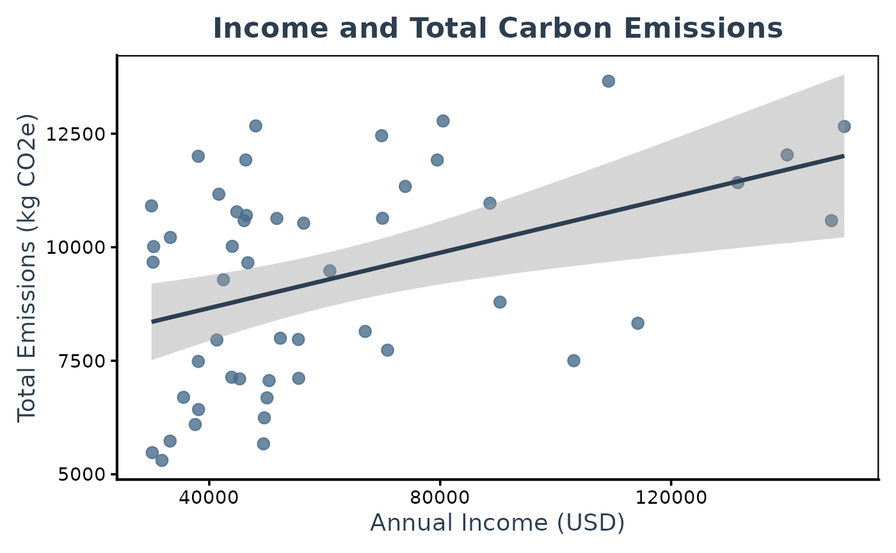

Analysis_Example
Analysis_Example.RmdIntroduction
In this document, we will demonstrate how to use the Survey-Embedded Carbon Footprint Calculator (SECFC) package. We will:
- Install the SECFC package from GitHub.
- Load SECFC and our sample dataset.
- Calculate carbon emissions using a built-in SECFC function.
- Run a linear regression to see how income predicts total carbon emissions.
- Create a plot of the data using ggplot2.
Step 1: Download the package from GitHub
First, we need to install the package from GitHub. If you do not have
remotes installed yet, run
install.packages("remotes") beforehand.
# Install the SECFC package from GitHub
remotes::install_github("jianing-d/SECFC")
#> xfun (0.51 -> 0.52) [CRAN]
#> * checking for file ‘/tmp/RtmptvQWLP/remotes1dcd7795771a/jianing-d-SECFC-f490b90/DESCRIPTION’ ... OK
#> * preparing ‘SECFC’:
#> * checking DESCRIPTION meta-information ... OK
#> * checking for LF line-endings in source and make files and shell scripts
#> * checking for empty or unneeded directories
#> * building ‘SECFC_0.0.3.tar.gz’Step 2: Load the package
Load the SECFC package, which provides the
calc_total_emissions() function among others.
Step 3: Load your dataset
For demonstration, we assume you are use questionnaire_sample.rds that contains survey responses (provided and pre-loaded in our package).
# Replace the file path with your own dataset if necessary
questionnaire_example <- SECFC::questionnaire_example
# Take a quick look at your data structure
str(questionnaire_example)
#> tibble [50 × 34] (S3: tbl_df/tbl/data.frame)
#> $ RecordedDate : chr [1:50] "30/6/2024 22:38" "30/6/2024 22:39" "30/6/2024 22:40" "30/6/2024 22:40" ...
#> $ T_01_CarUsage : num [1:50] 4 3 3 4 5 4 5 4 3 3 ...
#> $ T_02_CarType : num [1:50] 3 3 2 3 3 3 3 3 2 3 ...
#> $ T_03_CarDistance : num [1:50] 2 1 3 2 2 3 4 1 4 2 ...
#> $ T_04_PublicTransport : num [1:50] 5 4 5 4 4 5 5 5 5 4 ...
#> $ T_05_PublicTransport : num [1:50] 4 4 4 2 4 4 4 4 4 1 ...
#> $ T_06_AirTravelLong : num [1:50] 2 1 1 1 1 4 2 1 1 1 ...
#> $ T_07_AirTravelShort : chr [1:50] "7-10 flights" "More than 10 flights" "4-6 flights" "More than 10 flights" ...
#> $ T_08_LongDistanceTra : num [1:50] 5 4 5 4 4 5 5 5 5 5 ...
#> $ PETS_4 : num [1:50] 0 0 4 1 5 1 1 0 0 1 ...
#> $ PETS_5 : num [1:50] 2 0 2 1 1 1 0 0 0 0 ...
#> $ E1_Electricity Usage : num [1:50] 2 2 2 1 1 1 1 4 1 1 ...
#> $ EH_02_ElectricityBil_1: num [1:50] 300 79 153 73 107 181 80 130 132 27 ...
#> $ EH_05_NaturalGasBill_1: num [1:50] 59 46 0 27 47 20 0 80 0 27 ...
#> $ F_01_DietaryHabits_5 : num [1:50] 12 8 6 9 10 1 7 8 13 8 ...
#> $ F_01_DietaryHabits_6 : num [1:50] 0 0 2 0 4 0 0 0 1 1 ...
#> $ F_01_DietaryHabits_7 : num [1:50] 0 2 0 1 4 0 5 0 5 2 ...
#> $ F_01_DietaryHabits_4 : num [1:50] 5 5 3 7 11 7 2 14 7 8 ...
#> $ CL_01_ClothingPurcha : num [1:50] 3 3 4 3 4 3 4 5 3 3 ...
#> $ CL_03_MonthlyEx_9 : num [1:50] 0 15 200 20 0 0 200 0 0 0 ...
#> $ CL_03_MonthlyEx_10 : num [1:50] 200 100 0 49 0 150 100 100 250 100 ...
#> $ CL_03_MonthlyEx_11 : num [1:50] 200 0 0 58 0 100 0 0 0 0 ...
#> $ CL_03_MonthlyEx_12 : num [1:50] 0 0 0 0 100 100 0 0 0 0 ...
#> $ CL_03_MonthlyEx_13 : num [1:50] 30 25 0 20 100 500 0 0 0 0 ...
#> $ CL_03_MonthlyEx_14 : num [1:50] 50 35 50 0 0 80 50 100 100 100 ...
#> $ CL_03_MonthlyEx_15 : num [1:50] 0 0 35 150 0 610 0 800 0 0 ...
#> $ SD_06_HouseholdSize_17: num [1:50] 4 1 1 2 4 4 1 2 2 1 ...
#> $ SD_06_HouseholdSize_18: num [1:50] 0 0 0 1 0 2 0 2 0 0 ...
#> $ SD_06_HouseholdSize_19: num [1:50] 0 0 0 0 2 2 0 0 0 0 ...
#> $ SD_07_Country : chr [1:50] "United States" "United States" "United States" "United States" ...
#> $ SD_08_ZipCode : num [1:50] 85255 47905 30506 95843 95901 ...
#> $ EH_03_ElectricityBil_1: num [1:50] 3600 948 1836 876 1284 ...
#> $ EH_06_NaturalGasBill_1: num [1:50] 708 552 0 324 564 240 0 960 0 324 ...
#> $ income : num [1:50] 70011 42460 38100 55435 46043 ...Step 4: Calculate total carbon emissions
Now we use the calc_total_emissions() function from
SECFC to estimate each respondent’s carbon footprint based on their
survey responses. The returned data frame will include a new column
called TotalEmissions.
carbon_total <- calc_total_emissions(questionnaire_example)
#> [1] 92.367805 98.437531 853.446155 143.903384 64.928111 428.851286
#> [7] 860.479129 165.907811 49.807684 30.053274 66.278545 36.633441
#> [13] 1533.582182 5.976541 26.577335 6.010655 33.738234 1000.567825
#> [19] 20.889453 2.205671 53.732768 52.876651 631.770000 52.228997
#> [25] 138.177364 47.490663 23.226313 62.717858 187.839161 206.237059
#> [31] 441.669633 872.478975 213.444793 68.560063 39.493315 1.102835
#> [37] 14.863682 153.258302 205.155961 7.437304 338.897055 108.876717
#> [43] 339.854057 251.043570 2.205671 78.229376 661.823274 350.434362
#> [49] 23.047411 76.970867
#> [1] 2000.7449 1432.9049 1034.8790 1591.2109 1976.9828 278.7309 1328.3060
#> [8] 1515.3018 2384.2109 1496.9439 1151.5060 2159.1979 2981.1818 771.9849
#> [15] 1873.9439 2422.1028 387.3319 1299.2649 2337.0379 1236.5709 717.1018
#> [22] 1091.2649 1274.2260 1236.5709 2320.0249 1398.4379 1430.1579 1664.4519
#> [29] 1834.5818 2354.0509 2303.0119 1967.9849 2262.4628 848.3460 1830.1849
#> [36] 1168.5190 1807.0790 1820.0109 824.2218 1458.6899 2106.2369 2556.8618
#> [43] 2354.0509 2354.0509 2482.4800 1236.5709 1075.5860 1185.5319 2268.9860
#> [50] 1834.5818
#> [1] 12646.1865 4074.4541 8598.2838 2057.9939 3004.4915 5061.4532
#> [7] 4859.3106 7313.1887 3697.7663 1351.0163 4005.3551 10391.0752
#> [13] 860.8787 2838.2670 3214.1083 4678.0802 4728.1149 6337.9520
#> [19] 221.1884 10842.7621 2837.4855 3303.9434 3421.8111 18149.5396
#> [25] 4897.0090 8121.4577 3698.4610 2392.6138 3366.6200 3442.2310
#> [31] 7815.5112 8715.2947 8531.2194 8732.3160 18149.5396 5152.3063
#> [37] 3019.0126 17485.0281 9692.1211 5856.0455 5904.9503 8266.9653
#> [43] 4616.1039 5304.3871 1961.1258 7332.0468 3173.3211 3651.6724
#> [49] 613.7782 14734.7506
#> [1] 1540 0 2880 1105 2445 1105 335 0 0 335 335 770 0 1340 770
#> [16] 0 670 770 1005 0 1540 335 1105 1340 0 1875 2645 770 0 770
#> [31] 1440 0 335 670 1540 770 0 1105 1105 0 1105 1105 0 1440 0
#> [46] 1540 1105 0 0 1775
#> [1] 11011.232 10180.787 4235.089 10180.338 10180.787 15669.830 8470.178
#> [8] 4235.089 4235.089 10164.269 6776.143 4235.089 18634.392 2133.614
#> [15] 6776.143 6352.634 6776.143 14399.467 4235.089 6776.143 2117.545
#> [22] 10164.269 11027.951 4235.089 4235.647 4235.089 4251.808 2117.599
#> [29] 11027.356 15301.545 4235.089 6792.716 11011.232 4235.089 8470.178
#> [36] 10164.214 8480.032 10164.214 0.000 2117.545 11037.100 4251.663
#> [43] 11027.356 6352.634 2117.545 4235.089 6353.192 18660.261 2118.248
#> [50] 6776.143
#> [1] 17805.891 15786.584 17601.698 13706.451 15168.447 18115.094 15853.274
#> [8] 7744.596 8517.991 13377.282 10331.605 12396.458 24010.035 4961.143
#> [15] 10518.033 9950.267 10231.270 19581.951 7653.314 18857.681 5374.208
#> [22] 13295.382 17460.758 12913.736 8326.186 11616.747 9274.807 5412.307
#> [29] 13891.432 20352.948 9982.873 13990.827 16665.879 14554.311 16417.241
#> [36] 13821.271 11308.312 17613.740 4072.802 9439.717 15768.224 10778.056
#> [43] 16029.313 11723.825 6563.356 9533.905 9830.266 21109.145 4614.875
#> [50] 12918.487
# Check the first few rows
head(carbon_total)
#> # A tibble: 6 × 43
#> RecordedDate T_01_CarUsage T_02_CarType T_03_CarDistance T_04_PublicTransport
#> <chr> <dbl> <dbl> <dbl> <dbl>
#> 1 30/6/2024 22… 5.5 3 10 5
#> 2 30/6/2024 22… 3.5 3 5 4
#> 3 30/6/2024 22… 3.5 2 30.5 5
#> 4 30/6/2024 22… 5.5 3 10 4
#> 5 30/6/2024 22… 7 3 10 4
#> 6 30/6/2024 22… 5.5 3 30.5 5
#> # ℹ 38 more variables: T_05_PublicTransport <dbl>, T_06_AirTravelLong <dbl>,
#> # T_07_AirTravelShort <dbl>, T_08_LongDistanceTra <dbl>, PETS_4 <dbl>,
#> # PETS_5 <dbl>, `E1_Electricity Usage` <dbl>, EH_02_ElectricityBil_1 <dbl>,
#> # EH_05_NaturalGasBill_1 <dbl>, F_01_DietaryHabits_5 <dbl>,
#> # F_01_DietaryHabits_6 <dbl>, F_01_DietaryHabits_7 <dbl>,
#> # F_01_DietaryHabits_4 <dbl>, CL_01_ClothingPurcha <dbl>,
#> # CL_03_MonthlyEx_9 <dbl>, CL_03_MonthlyEx_10 <dbl>, …Step 5: Run a linear regression
We will examine how a respondent’s income might predict their total
carbon emissions. This is a basic linear model using the built-in
lm() function.
model <- lm(TotalEmissions ~ income, data = carbon_total)
# Display summary statistics of the regression
summary(model)
#>
#> Call:
#> lm(formula = TotalEmissions ~ income, data = carbon_total)
#>
#> Residuals:
#> Min 1Q Median 3Q Max
#> -8188.6 -2905.5 53.7 3393.7 7988.5
#>
#> Coefficients:
#> Estimate Std. Error t value Pr(>|t|)
#> (Intercept) 9.043e+03 1.330e+03 6.797 1.5e-08 ***
#> income 6.031e-02 1.933e-02 3.120 0.00306 **
#> ---
#> Signif. codes: 0 '***' 0.001 '**' 0.01 '*' 0.05 '.' 0.1 ' ' 1
#>
#> Residual standard error: 4294 on 48 degrees of freedom
#> Multiple R-squared: 0.1686, Adjusted R-squared: 0.1513
#> F-statistic: 9.734 on 1 and 48 DF, p-value: 0.003058Step 6: Create a Plot
Finally, we can visualize the relationship between income and
TotalEmissions using ggplot2. The plot below includes:
- Points representing individual respondents
- A linear regression line (and confidence interval)
# Load ggplot2
library(ggplot2)
# Define custom colors
point_color <- "#4A6D8C" # desaturated blue-grey for points
line_color <- "#2C3E50" # deeper blue-grey for the regression line
lm_plot <- ggplot(carbon_total, aes(x = income, y = TotalEmissions)) +
geom_point(color = point_color, size = 2.8, alpha = 0.8) +
geom_smooth(method = "lm", se = TRUE, color = line_color, linewidth = 1.2) +
labs(
title = "Income and Total Carbon Emissions",
x = "Annual Income (USD)",
y = "Total Emissions (kg CO2e)"
) +
theme_classic(base_size = 14) +
theme(
plot.title = element_text(face = "bold", hjust = 0.5, color = line_color),
axis.title = element_text(color = line_color),
axis.text = element_text(color = "black"),
panel.border = element_rect(color = "black", fill = NA, linewidth = 0.8),
plot.margin = margin(10, 10, 10, 10)
)
# Print the plot
lm_plot